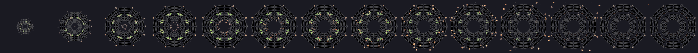
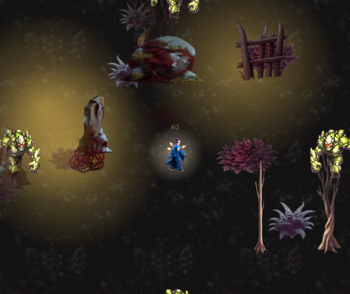

手搓廣告遊戲選集 · 吸血鬼復仇 · 視覺修正
金剛鐘的梵音波躺在資料夾裡 14 幀沒被用到，因為新星家族寫死播冰霜新星； 鎮煞符飛出去的是「法陣爆發的第一幀」，所以是一團爆炸在飛。兩個的驗證都顯示通過過。
兩個都修好了。而且兩個都不是「素材缺了」，是素材有、但沒接上去 ——所以我原本的驗證兩個都顯示通過。
FireNova 寫死播 frost_nova// 原本
PlaySequence("frost_nova", pos, r * 1.7f, ...) // ← 完全沒有讀 s.Def.FxName
金剛鐘的資料早就指定了 FxName = "vajra_wave"，素材也生好了 14 幀——
但新星家族的開火函式從頭到尾沒去讀那個欄位，所以放出來的一直是冰霜新星的冰波。

這組八卦音波是之前跟道士那批一起生的，一直躺在 Art/Fx/vajra_wave/ 裡沒被用到。
所以這一項美術成本是 $0——不用重生，接上去就好。
順手把「往外飛的冰晶」也改成只給冰系：梵音波噴一圈冰渣，那個違和感比借用整支特效還明顯。
名字 = 金剛鐘 ✓
金剛鐘實際播出去的序列 = vajra_wave ✓ 用自己的梵音波了
對照：寒冰新星實際播 = frost_nova ✓ 沒被改壞
對照組是必要的——改共用函式最容易的失敗是「修好自己、弄壞別人」。
飛行物的貼圖是 VrEffectArt.Get(fxName) 的第一幀，而鎮煞符的 fxName 是
ward_array——法陣爆發。所以畫面上真的是一團爆炸在飛。
這跟獵魔弓「把弓丟出去」是同一類：飛行中的視覺跟武器機制對不上。 差別是上次用錯的是武器圖示，這次用錯的是特效序列。
修法：飛行物改用武器圖示（就是一張符），並朝飛行方向轉。
一個細節：朝的是當下真正的飛行方向，不是終點。 這是拋物線——起手往上飛、末段往下砸，朝終點對齊的話中途角度全是錯的。
聖水炸彈與煉獄火海那條維持原本的翻滾瓶子，行為一個字都沒變。

飛行物掛的圖 = 符咒圖示 ✓ 是一張符（不是 ward_array 的爆發幀）
朝向對齊飛行方向：56/56 幀 ✓ 像箭一樣朝著飛
「素材載得到幾幀」跟「實際播了哪一組」是完全不同的兩件事。
我先前的道士驗證裡有這一行：
特效 vajra_wave = 14 幀 ✓
它是真的、也一直是綠的——但它驗的是素材，不是行為。 素材可以好好地躺在資料夾裡、載得到、幀數正確，而呼叫端根本沒讀它。
所以現在 VrFx.PlaySequence 在 #if VR_SHOTS 下會記錄
最後一次真的播出去的名字，驗證改成驗那個。飛行物也一樣——
驗的是「掛上去的 sprite 是哪一張」，不是「素材在不在」。
跟法輪那次（「載得到但沒接上，畫面上還是靜態圖」）是同一個模式， 這已經是第三次了，所以寫進不變條件。
美術 $0。 梵音波是現成的（生了沒接），符咒用現成的武器圖示。
還沒出新 TestFlight——build 47 不含這兩個修正。要出 48 說一聲。
→ 上一頁：殘符／鎮煞符／陣法的現況